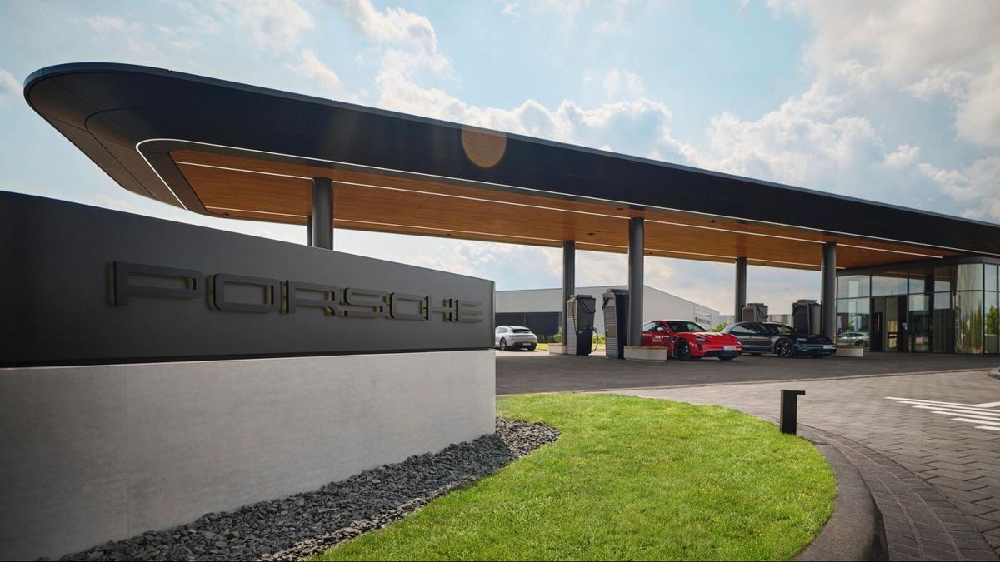
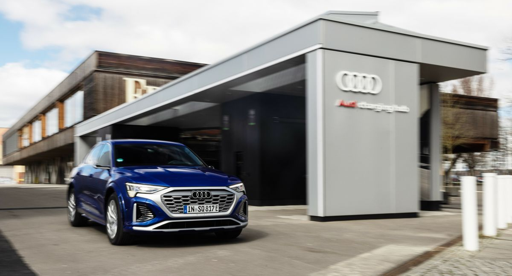
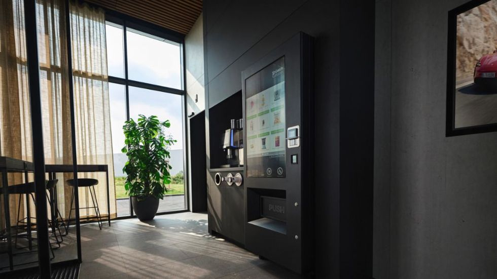
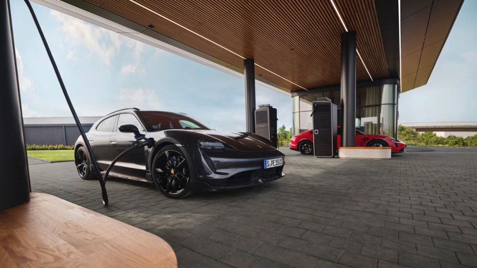

Here is What The Porsche Charging Lounge Offers
The EV sports car maker is going the luxury hub route, but will we see these stateside?
BY JAY RAMEYUPDATED:
JUL 28, 2023

-
Porsche opens first branded luxury charging hub in Germany, featuring six 300-kW DC fast-charging stalls and
four 22-kW AC charging points.
-
Entry to the lounge is designed to be activated by an automatic license plate recognition system, or by
using the MyPorsche app, with food and drinks inside.
-
The automaker plans additional hubs in Austria and Switzerland in the near future, as more electric vehicles
are added to its lineup.
After Audi's early success with reservations-only charging hubs, we knew it wouldn't be long before another VW
Group brand offered a similar experience. Porsche inaugurated its own luxury Charging Lounge this month in
Bingen am Rhein, Germany, offering its own take on the EV experience.
The lounge, offering six 300-kW DC fast-charging stalls in addition to four 22-kW AC charging points, is the
first of its type, with the brand set to expand the concept to other countries in Europe fairly soon.
Positioned just a couple of minutes from the busy A60/A61 junction, the Charging Lounge is designed to be open
24/7, offering a spacious and luxurious interior stocked with snacks and soft drinks.
RELATED STORY

Could Audi is Charging Hub Work Here?
A Porsche ID is required to enter the lounge itself, but there's an automated system for that as well. If a
given Porsche's license plate is stored in the computer, an automatic license plate recognition system will let
the car in. And even if the license plate isn't stored in the system, drivers can use the MyPorsche app to
access the station, or scan a QR code or use the Porsche Charging Card to access the station.
A Porsche ID is required to enter the lounge itself, but there's an automated system for that as well. If a
given Porsche's license plate is stored in the computer, an automatic license plate recognition system will let
the car in. And even if the license plate isn't stored in the system, drivers can use the MyPorsche app to
access the station, or scan a QR code or use the Porsche Charging Card to access the station.

The interior of the charging lounge is not too dissimilar from an airline lounge, with snacks and drinks
inside.
PORSCHE
The station generates some of its own electricity thanks to solar cells on the roof of the building, but the
majority of the power comes from a dedicated grid connection. Speaking of power, the station itself features
300-kW chargers produced by South Tyrolean specialist Alpitronic. And in the future, Porsche anticipates even
faster charging speeds will be afforded by 400-kW chargers.
This would also drastically reduce the amount of time one will have to spend in one of these lounges, so perhaps
there wouldn't really be time for a physical workout in front of a smart mirror, which is yet another item
currently offered by the lounge.
The entire concept of an airport-style charging network isn't new per se, with a number of automakers having
explored the idea in the early years of EVs. But Porsche is one of the first to commit to building several
lounges of this type, with a number planned for Austria and Switzerland, in addition to more sites in Germany.
Will we ever see a charging lounge like this in North America?

The station draws some of its power from solar cells on the roof, but the fast-chargers require a grid
connection, as with Audi is charging hubs.
PORSCHE
At the moment that's hard to say, with just one battery-electric Porsche on the market. But even when the
variety of electric Porsche models begins to outnumber internal-combustion vehicles, there would still have to
be a business case behind it. There are certainly some cities in the US where the number of electric Porsche
models could make the idea worthwhile.
Depending on how popular the charging lounges become in Europe in the next few years, we wouldn't rule out
seeing a handful open stateside by the end of the decade.
"Porsche has mapped out an ambitious path toward electrification. By 2030 we want over 80% of the cars that we
deliver to be all-electric. This ambitious ramp-up requires a high-performance and dense fast-charging network,"
said Oliver Blume, Chairman of the Executive Board of Porsche AG.
Can such a branded charging lounge concept be popular in the states in a few years, or is this better suited to
Europe? Let us know your thoughts.